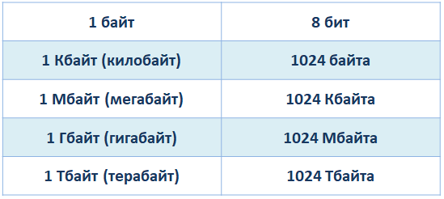
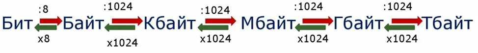
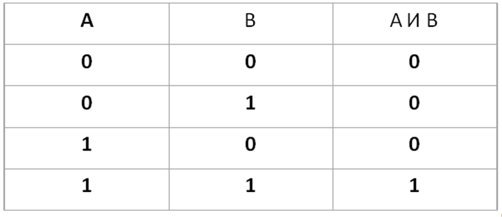
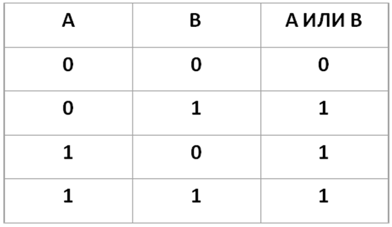
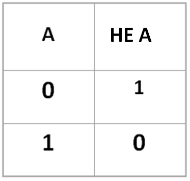
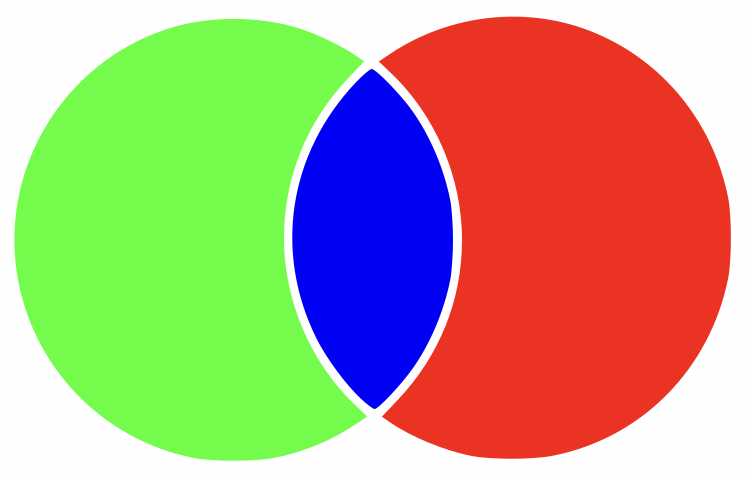
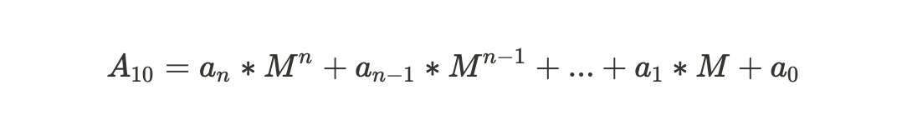

ЗАДАНИЕ 1. ЕДИНИЦЫ ИЗМЕРЕНИЯ ИНФОРМАЦИИ
Для начала нужно понимать, что такое просто единица измерения. У длинны - это миллиметры, сантиметры, метры; у воды - это литры, гектолитры. Думаю, что мысль понятна? Так вот. Все данные на вашем компьютере имеют свой вес и измеряются в единицах измерениях - в битах. Биты в свою очередь можно перевести в байты - 1 байт = 8 битам. Байты в Кбайты - 1 Кбайт = 1024 байтам. И так далее...

Самая маленькая единица измерений - это биты. Самая большая (в рамках этой таблицы) - это Тбайты (терабайты).Если мы переводим из меньшего в большее, то мы умножаем. Если из большего в меньшее, то делим.

ЗАДАНИЕ 2. КОДИРОВАНИЕ И ДЕКОДИРОВАНИЕ ИНФОРМАЦИИ
Существует 3 основных типа (вида/формировки/особенности):
Тип 1. Шифр, состоящий из символов
Тип 2. Шифр, состоящий из цифр
Тип 3. Подбор шифровки с единственным вариантом дешифровки
ЗАДАНИЕ 3 проверяет умение определять истинность составного высказывания .
Для успешного выполнения третьего задания необходимо повторить логические операции, их обозначения и таблицы истинности
Логическая операция КОНЪЮНКЦИЯ:
Соответствует союзу И
Обозначается знаками ^ , &
Иначе называется логическое умножение
Конъюнкция двух логических переменных истинна тогда и только тогда, когда оба высказывания истинны.

Логическая операция ДИЗЪЮНКЦИЯ:
Соответствует союзу ИЛИ
Обозначается знаками v, I
Иначе называется логическое сложение
Дизъюнкция двух логических переменных ложна тогда и только тогда, когда оба высказывания ложны.

Логическая операция ИНВЕРСИЯ:
Соответствует частице НЕ
Обозначается черточкой над именем, НЕ, ￢
Иначе называется отрицание
Инверсия логической переменной ложна, если сама переменная истинна, и, наоборот, инверсия истинна, если переменная ложна..

ЗАДАНИЕ 4.
Четвертое задание в ОГЭ по информатике заключается в нахождении кратчайшего пути между населенными пунктами. Мы предлагаем два способа решения этой задачи, но они очень похожи, на самом деле. И как всегда будем разбирать на примере, так как каких-то теоретических знаний здесь не требуется, только внимательность и логика.
ЗАДАНИЕ 5.
В 5-м задании ОГЭ по информатике требуются навыки исполнения или создания линейных алгоритмов для формального исполнителя с фиксированным набором команд, а также навыки решения линейных или квадратных уравнений.
ЗАДАНИЕ 6 проверяет умение анализировать программу на одном из языков программирования, содержащую условный оператор и логические операции.
Условный оператор. В языке программирования «Школьный алгоритмический» он имеет вид «если <условие> то <действие 1> иначе <действие 2> все». В языке программирования «Паскаль» — «if <условие> then <оператор_1> else <оператор_2>». В языке программирования Python — «if <условие>: <группа операторов 1> else: <группа операторов 2>».
ЗАДАНИЕ 7.СЕТИ И ИНТЕРНЕТ
Нам потребуется знания о том, как происходит соединения, подключения одного компьютера к другому компьютеру. Также важно понимать организацию файловой системы (относительный, абсолютный путь). Для начала определимся с некоторыми базовыми понятиями: протокол, сервер, домен, файл, интерфейс.
ЗАДАНИЕ 8.КРУГИ ЭЙЛЕРА
На изображении ниже нарисованы два круга, которые пересекаются (общая площадь). Следовательно, можно разделить два круга на три условные зоны (для удобства они помечены цветами). Два круга олицетворяют два множества, а зоны различные запросы с этими множествами. Попробуем подробнее разобраться.
Например, есть у нас два множества: стихи и рассказы. Стихи — это зелёная зона и синяя, а рассказы синяя и красная. Другими словами, у каждого множество полностью свой круг. Запросы обстоят чуть сложнее. Для удобства дальше будем применять логические знаки. Знак | (вертикальный слэш) для логического ИЛИ и & (амперсанд) для логического И.
Стихи & Рассказы - синяя зона
Стихи | Рассказы - зелёная, синяя и красная зона
Стихи - зелёная и синяя зона
Рассказы - синяя и красная зона

ЗАДАНИЕ 9.ГРАФЫ
Существует несколько видов решения. Первый вариант решения - переписать все возможные пути из города А в город П, которые обязательно проходят через город Е. И потом посчитать количество данных путей. Данный способ занимает большое количество времени, долго расписывать и имеет большой шанс ошибиться. Второй вариант решения - подписывать сумму (веса) предыдущих путей. Этим способом и будем решать данный тип задания.
ЗАДАНИЕ 10.СИСТЕМЫ СЧИСЛЕНИЯ
Для остальных систем счисления, не кратных двум, придумали универсальные способы перевода из десятичной системы счисления в любую другую и перевод из какой-либо системы счисления в десятичную.
Способ перевода из системы счисления n в десятичную
